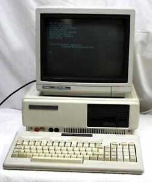

If you can forget about what other people will think about you, whether you'll be the number one best who ever lived, and if you'll fit in, you'll be free to pursue what makes you happy. Relish the challenge, give of your time, and enjoy the journey. People like happy people. You'll be just fine.
Janitor Joe
September 25, 2019 - Post #2
I believe it was 1990 or 1991 when we got our first computer, the aforementioned Tandy 1000. My dad bought it used and likely found it in the MoneySaver classifieds ads. My brothers wasted no time in discovering the few games loaded on the hard drive. I may have already seen computer games at school--who doesn't remember Oregon Trail? But the first computer game I ever saw at home was Janitor Joe. I've never talked to anyone who knows or remembers this game, but the modern Internet does! I can still hear the "putputput" noise of Janitor Joe as he glides back and forth on the screen. I'm not sure I even got past the second level, but I'll probably remember that little stick man until the day I die.
The Beginning
September 25, 2019 - Post #1
I wrote my first computer program when I was a junior in high school. My dad let me setup our old Tandy 1000 computer in my room, where there wasn't even room for the computer and its keyboard on my desk. I don't know why I wanted the computer in my room--I don't recall going crazy playing Dig Dug, Janitor Joe, or King's Quest; games that I'd relish playing again now. Perhaps it was just my curiosity about what that old thing could do. I tinkered around with the few commands I knew in the DOS prompt and found my way to a help file on BASIC programming. Somewhere in these instructions I learned that I could write musical notes with reference to the octave, note, and duration to make the computer play a song. I ran to the piano bench and grabbed the "Popular 1970s Theme Songs" sheet music book, which included songs from movies I'd never seen like Brian's Song and The Godfather. Within the afternoon I'd learned enough to code "Speak Softly, Love" (The Godfather Theme). I was so proud of my accomplishment that I made both my mom and my dad stand in my room while the computer played its MIDI music. "That's pretty neat," they said.